2026-09-07 · 当前工作区浏览器 DEMO · 阅读 UI 升级方案
这是现有版本的页面证据，不是新版设计稿。本轮已浏览主要前端页面，未验证真实桌面保存、快捷键、Agent 联通或模型返回。新版方向已明确：简洁纸页、手绘陪伴、移除宠物等级和 XP。
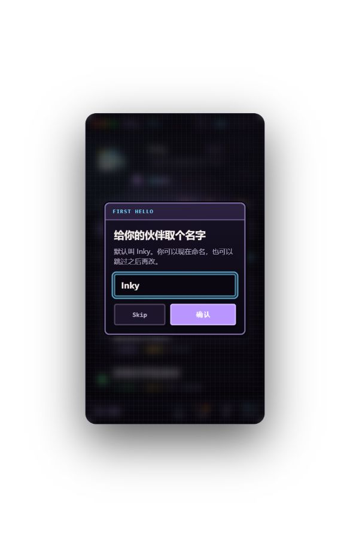
可跳过，但命名弹窗挡住第一次记录。新版首屏直接进入任务输入。
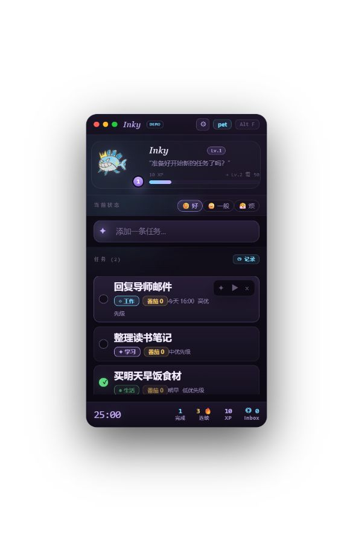
任务、编辑、拆解和专注入口完整。等级、经验条、心情及底栏挤占主要空间；新版移除成长系统。
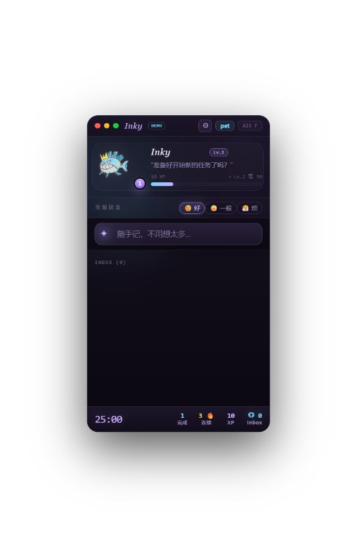
可切换记录模式；空态缺少用途说明。建议使用明确页签与一句操作提示。
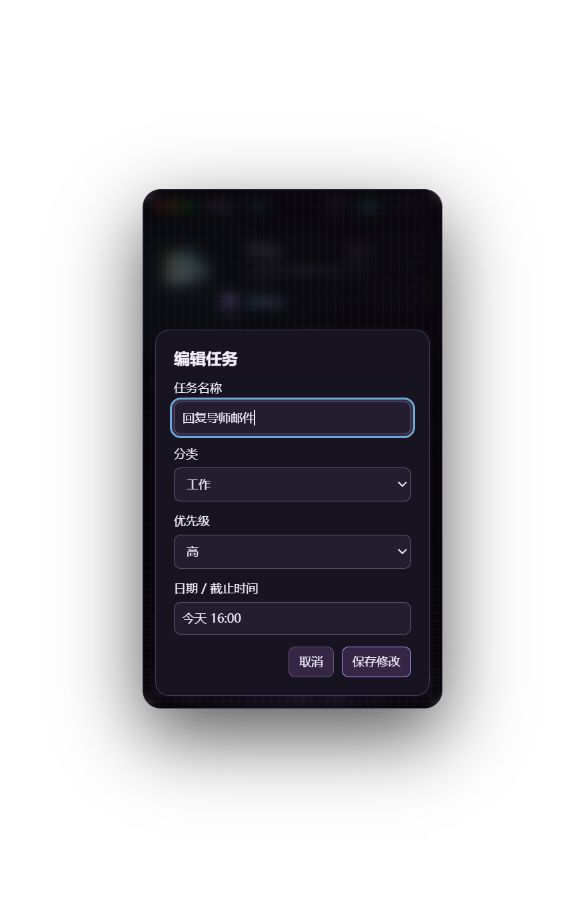
字段与保存动作明确。统一纸页容器与间距，保留手动修改。
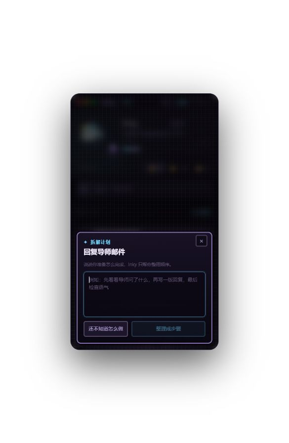
先收集用户计划，边界明确。提示和按钮偏小，手动编辑路径应更直白。
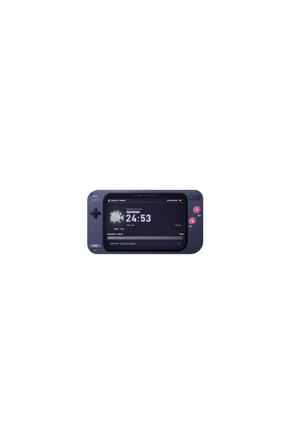
已观察到计时。240×136 的掌机外壳压缩内容；建议改为任务、时间、暂停为主的纸条。
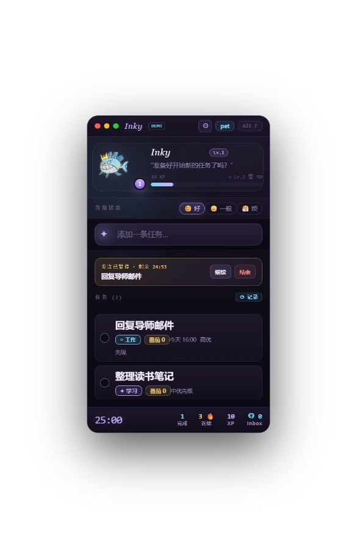
有剩余时间与继续入口，是应该保留并突出显示的能力。
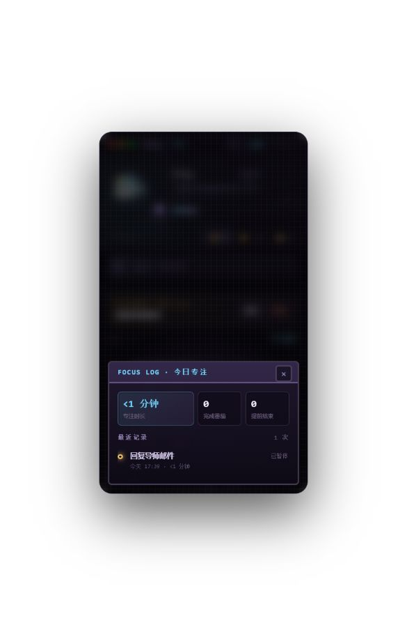
能看到本次暂停的 DEMO 会话。保留真实工作记录，收起首页重复统计。
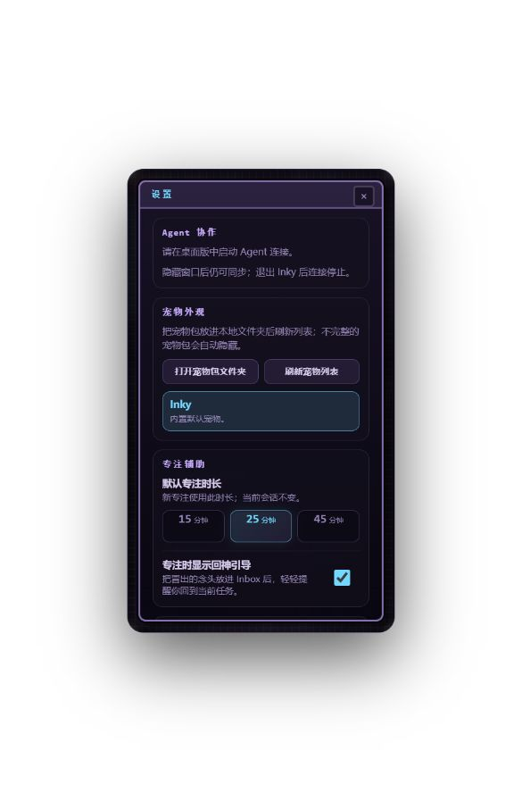
协作、外观、专注混排。建议按目的分组，角色设置不再含成长体系。
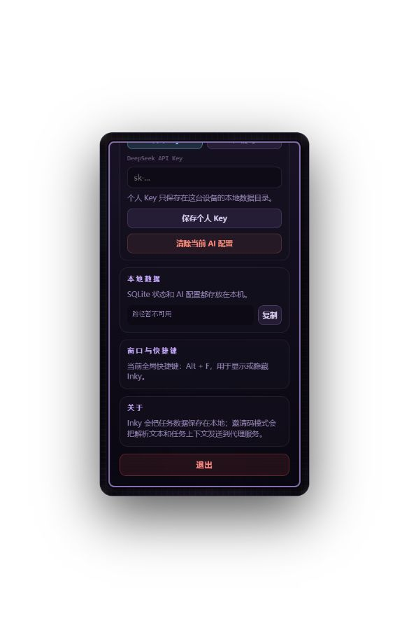
AI 配置、本地数据、窗口和关于需要滚动查看；技术说明留在设置中。
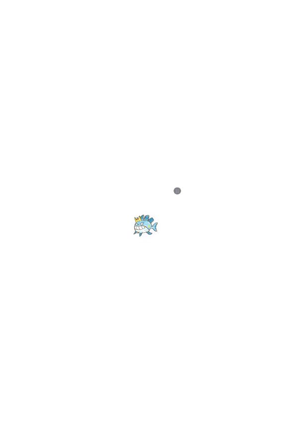
占用空间小，保留轻量陪伴方向。截图不能验证原生拖动和托盘行为。
AI 返回页、计时自然结束、真实保存错误和同步冲突没有在本轮触发；方案中的相关结论来自当前代码核对。截图无法证明完整无障碍合规性。点击每张图片可查看原始截图。